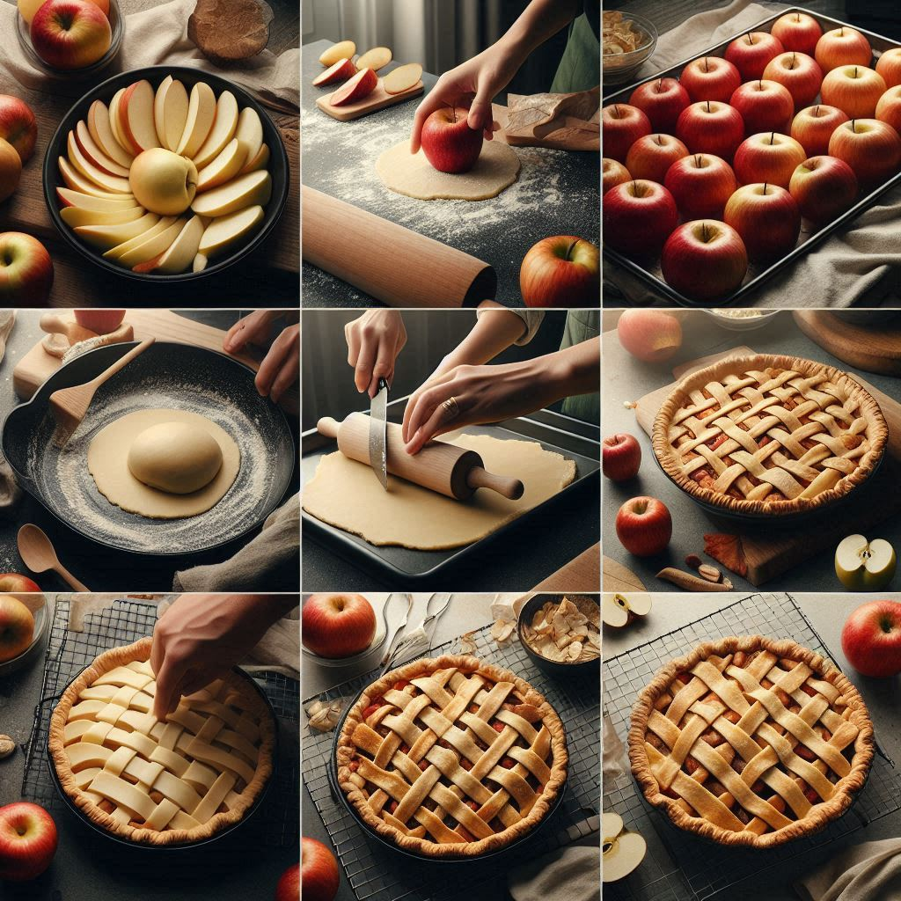
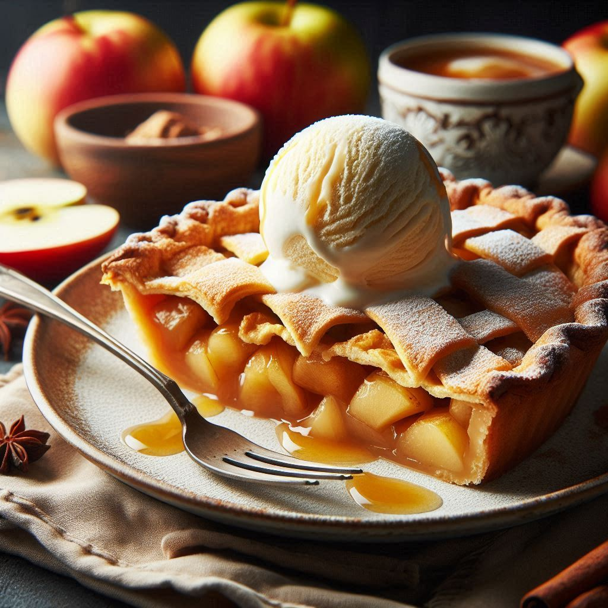

Process
Ingredients for Apple Pie
You may be surprised to hear you only need pantry staples and some fresh apples to make this apple pie recipe.
Pie crusts – you’ll need two disks of homemade pie crust. We love this apple pie crust just as much as the filling. Since it’s an all-butter homemade pie crust (no shortening), it’s flaky and tender. The bottom is never soggy but forms a crispness at the edges. You can use storebought, but homemade is best.
Apples – We use Granny Smith in this pie recipe for the best flavor and texture. Avoid overripe or mushy apples. See my notes on apple substitutions below.
Butter – use unsalted to add richness to the saucy filling.
Flour – helps to thicken up the filling.
Cinnamon – adds a warm, spiced flavor to the apples. You could also add a pinch of nutmeg.
Sugar – add sugar to taste depending on the types of apples used (see apple options below).
Egg Wash – combine egg and water gives the crust a golden brown, shiny finish.
How to Make Apple Pie
Prepare the pie crust recipe and chill in the refrigerator as instructed. When ready to assemble your pie, preheat the oven to 425˚F with a rack in the center of the oven.
Make the Filling Melt butter in a medium saucepan over medium heat then whisk in 3 Tbsp flour and continue whisking constantly for 1 minute. Whisk in 1/4 cup water and 1 cup sugar (if using a sweeter apple, adjust the sugar). Bring to a boil, reduce heat to a simmer and continue whisking for 3 minutes, then remove from heat. Do not overcook.
Prepare apples – peel core and slice apples into about 1/4″ thick slices. Sprinkle with 1 1/2 tsp cinnamon and toss to combine, then pour on the filling mixture and stir to coat the apples.
Roll the Crust – Over a floured surface, roll the first chilled pie disk into a 12-inch diameter disk then transfer to a 9-inch, deep pie pan. Add the apples over the crust, mounding in the center (avoid getting apple filling on the edges of the pie crust, which will make it difficult to seal).
Lattice Top – Roll the second disk into an 11-inch diameter circle and cut into 10 strips. Arrange half of the strips over the pie and weave in the second layer of strips. See my easy tutorial on how to make a lattice crust. Finish the pie by crimping the edges. In a separate dish, beat together the egg and water and brush over the lattice crust (you will have some eggwash left over).
Bake at 425˚F for 15 minutes, then reduce the heat to 350˚F and continue baking for another 45 minutes until you see thick juices bubbling through the lattice crust.

How to Keep Pie From Browning Too Fast
If you find the edges of your pie are browning too quickly, you can use a pie shield or simply cut a 3″ circle out of the center of a square sheet of foil and loosely place it with the dull side down over the top of your pie.
Tips for the Best Apple Pie
Don’t overheat the filling – Avoid overheating the sauce or cooking for too long, which can cause it to separate or get too thick. If this happens, don’t panic, you can still toss the apples together with the sauce, and it will come together in the oven.
Chill the crust – make sure to chill the pie crust according to the instructions or the butter will melt out of the crust and it will go flat.
Let it cool – allow the pie to cool and set for at least an hour before slicing. If you serve it hot, it will slide apart.
